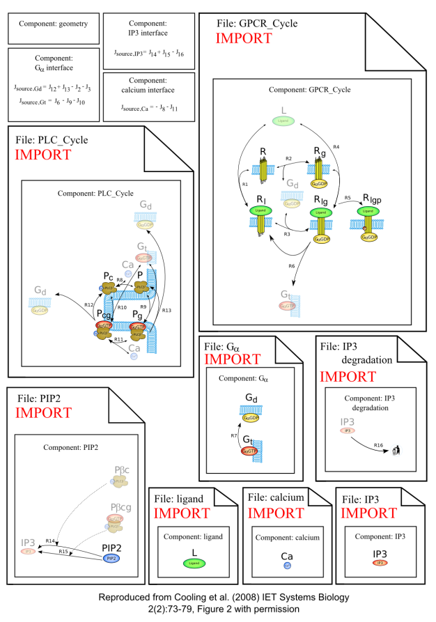

This CellML model is the model which was used to produce the original results in the paper, and therefore it is known to be completely accurate.
Model Files are available here:
1. The main file: IP3Submodel_Main.cellml.
2. extracellular_ligand.cellml.
3. Galpha.cellml.
5. calcium.cellml.
6. PLC_Cycle.cellml.
7. PIP2.cellml.
8. IP3.cellml.
The model structure illustrates a modular version of the cardiac myocyte IP3 production system as developed in the paper:
Modeling hypertrophic IP3 transients in the cardiac myocyte, Michael Cooling, Peter Hunter and Edmund J. Crampin, 2007, Biophysical Journal, 93, 3421-3433. PubMed ID: 17693463
The process of how this model was modularised into functional and messenger components is described in detail in the paper:
Modelling biological modularity with CellML, M.T. Cooling, P. Hunter, and E.J. Crampin, 2008, IET Systems Biology, 2(2), 73-79.

A schematic diagram of the CellML model.